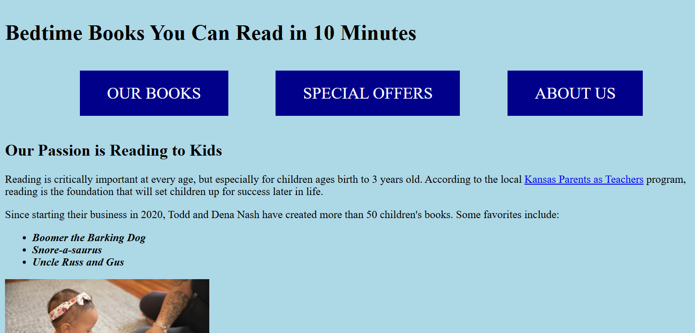
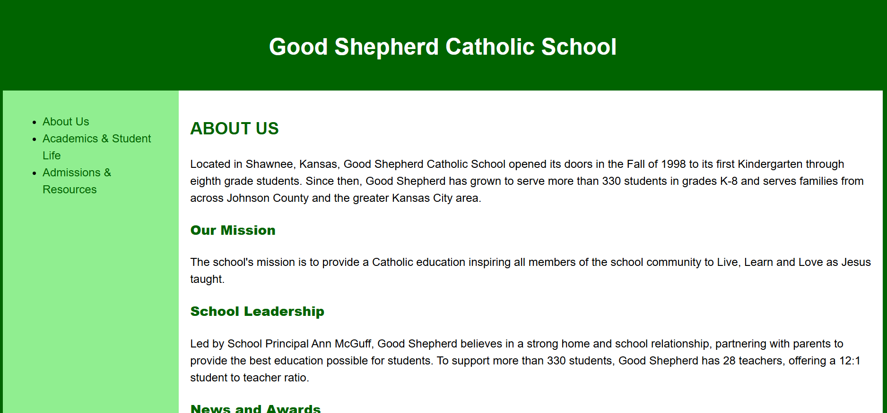
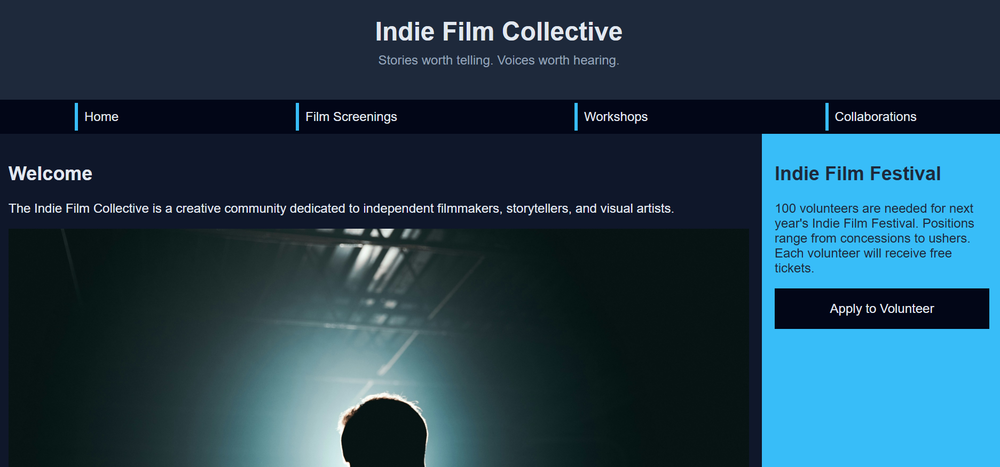

Projects Overview
Here are some of the projects I've worked on, showcasing my skills in web design and development using HTML and CSS. You can also check out my CodePen and GitHub profiles.
Bedtime Books You Can Read in 10 Minutes
Built first multi-page website with HTML and CSS.
Bedtime Books Website
Good Shepherd Catholic School Website
Built Good Shepherd Catholic School website sample with HTML and CSS.
Good Shepherd Catholic School Website
Indie Film Collective Website
Updated branch of Professor Christina Carrasquilla's multi-page website. Redefined HTML and CSS to be mobile first.
Indie Film Collective Website